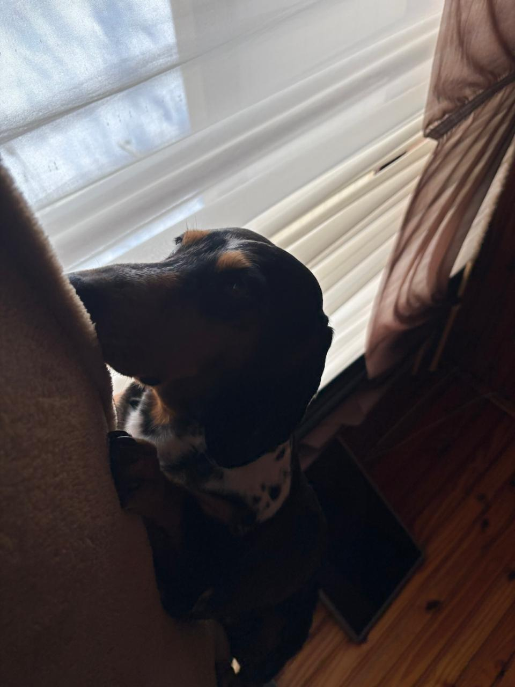
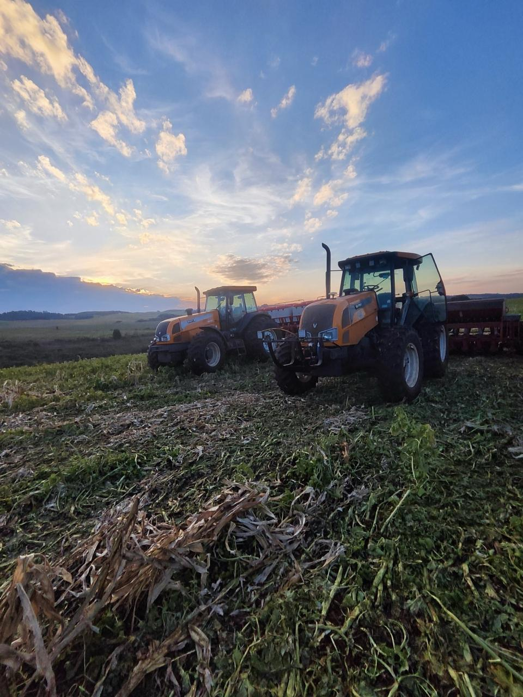
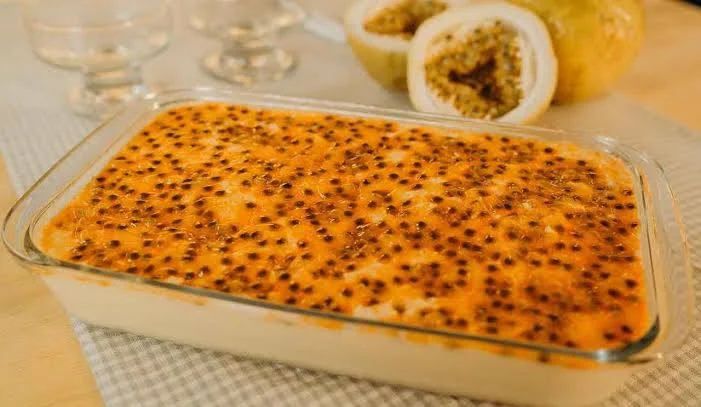

Meus Companheiros de Quatro Patas
Publicado em: 10 de Junho de 2026
Conheça os meus cães e veja algumas fotos divertidas deles no dia a dia do nosso sítio!
Ler post completo →Olá! Este blog foi desenvolvido como parte prática da disciplina de Desenvolvimento Web do Instituto de Tecnologia (ITEC) na Universidade de Passo Fundo (UPF). Aqui você encontrará meus registros de aprendizado em HTML, CSS e JavaScript, além de seções dedicadas à minha trajetória acadêmica, informações de contato e até algumas das minhas receitas favoritas. Navegue pelo menu lateral para explorar!

Conheça os meus cães e veja algumas fotos divertidas deles no dia a dia do nosso sítio!
Ler post completo →
Registros de momentos inesquecíveis, histórias e parcerias com os meus melhores amigos.
Ler post completo →
Minha família trabalha com lavoura. Aqui mostro um pouco dessa rotina, fotos e vídeos da nossa dedicação.
Ler post completo →
Aproveitei para preparar a minha sobremesa favorita. Confira aqui a receita especial exigida pelo laboratório!
Ler post completo →
Aproveitei o final de semana para fazer a minha sobremesa favorita. Em breve vou postar a receita completa na aba dedicada!

Entender a diferença entre uma simples div e tags como article, section e nav muda completamente a qualidade do código.

Aprender Flexbox facilitou muito a criação deste layout em colunas. O design responsivo agora faz muito mais sentido.

Uma lista com as minhas leituras atuais sobre tecnologia, desenvolvimento pessoal e ficção científica.

Configurando meu ambiente de desenvolvimento. Instalar as extensões certas poupa muitas horas de digitação.

Este é o primeiro post do meu blog! Muito animado para começar essa jornada no mundo do desenvolvimento web.